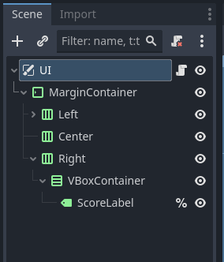
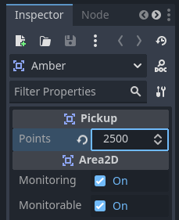
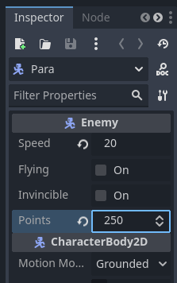

Score
IMPORTANT! This module requires the UI and Global Script module to be completed first!
Oftentimes considered a relic of arcade games, a score at the top of the screen in a singleplayer game can still be an enticing reason to retry a level or tell the player how well they are doing. On this page we will create a way to track and see a score, as well as add several methods of increasing that score depending on the other modules you have (or will) complete.
Editing the Global Script
Our first step is the easiest: adding a global variable for the score. Simply open up your global script and and add a variable called score.
var score = 0Adding the Score to the UI
Of course, we still can't see the score anywhere in game. To fix that navigate to your UI scene. Right click our Right node, and create a new VBoxContainer node as a child. Then right click the new VBoxContainer and add a label node as a child. Rename the label to ScoreLabel, and then set it to have a unique identifier by right clicking it and pressing Access as Unique Name.

The UI scene tree should now look something like this:
Next, we need to set the ScoreLabel node to update with the player's score. Open up the UI script, then in the _process function we will add the following line of code:
func _process(_delta):
%ScoreLabel.text = "Score: " + str(Global.score)Note that we are combining the string "Score:" and the score variable as a string (called casting) with a + sign. You can actually add strings!
Unfortunately we still don't have a way to increase our score. We will fix this in the next couple sections as we explore many ways to increase points.
IMPORTANT! Each of the following sections require additional modules and are optional (though I do recommend doing at least one so you can get points!)
Pickup Points
This section requires the Collectables module. Navigate to your Pickup script. At the top add a new export variable called points. Set the default to 100.
@export var points = 100Next, go in the onPickup function and add the following line of code above the queue_free method:
func onPickup(_area):
Global.score_queue += points
queue_free()You can change the point values each pickup type gives by selecting their root node in their specific scenes and changing points in the inspector.
Enemy Points
This section requires the Simple Enemy module. Navigate to your Enemy script. At the top add a new export variable called points. Set the default to 100.
@export var points = 100Next, go to the die function. Directly above the queue_free method add the following line of code:
func die():
is_moving = false
call_deferred("disable_collision")
sprite.play("death")
await sprite.animation_finished
Global.score_queue += points
queue_free()Note that if you have completed the Advanced Enemies module, you still put the line of code above the queue_free method, just inside of the if then statement like so:
func die():
is_moving = false
if not invincible: call_deferred("disable_collision")
sprite.stop()
sprite.play("death")
await sprite.animation_finished
if invincible:
is_moving = true
sprite.play("move")
else:
Global.score_queue += points
queue_free()You can change the point values each enemy type grants on defeat by selecting their root node in their specific scenes and changing points in the inspector.
Time Left Points
This section requires the Time Limit and Multiple Levels modules. Navigate to your world script. Inside of the level_complete function add the following line of code to the top of the function:
func complete_level():
Global.score += int(LevelTimer.time_left) * 5
if not next_level is PackedScene: return
get_tree().change_scene_to_packed(next_level)This code snippet adds 5 points per second left on the level timer. You can change it by replacing the 5 with how many points you want each second to be worth.
Note the int() surrounding the Leveltimer.time_left. This is call casting. By doing this we turn the time_left into an integer, or whole number, so that we always end up with a multiple of 5 and no decimals.
And that is score implemented! You can use the methods used in this module to add score bonuses to just about any action in the game you want! Go ahead and try some out then move on to another module.